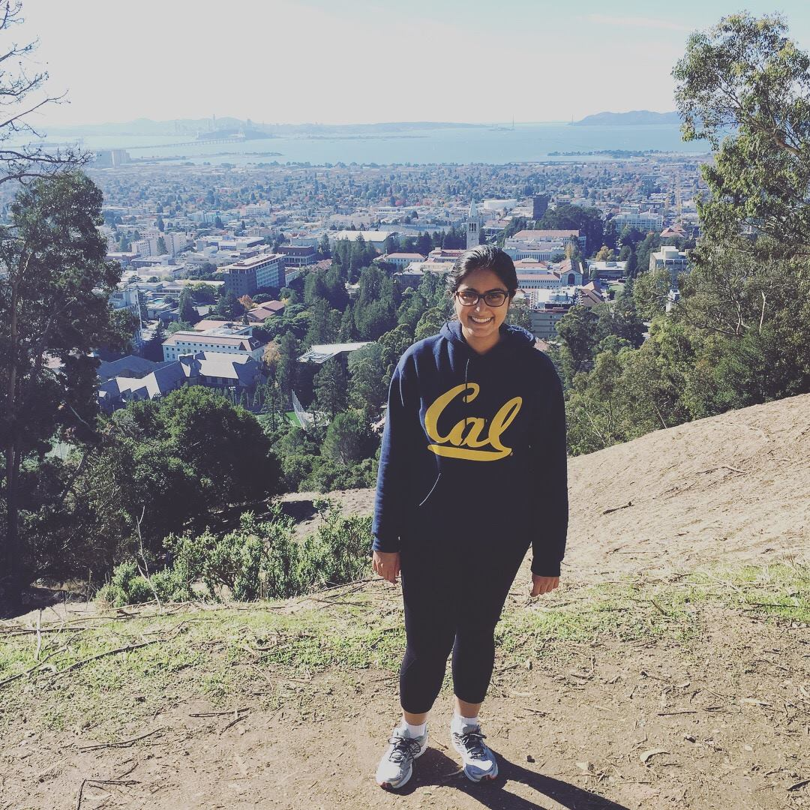

Who I am
Hello! As a rising senior in Mechanical Engineering (graduating Spring 2021), I'm interested in opportunities in Aerospace, Product Design, Medical Devices, and Robotics. I am on track to complete a minor in aerospace engineering.
I am passionate about working on complex, cross-disciplinary projects. Throughout college I’ve honed strong skills in mechanical design, leadership, and communication through numerous in-depth projects. As a creative and critical thinker, I derive joy from coming up with unconventional solutions to new problems.
As I'm always looking for a new challenge, I love collaborating with multidisciplinary teams and thinking up creative solutions to difficult problems.
I'm skilled in CAD (Solidworks, Fusion360), programming (Python, Java, MATLAB), product design, fabrication, and rapid prototyping.
My interests include equity/inclusion, drawing, geography, playing the violin, and a variety of dance forms.
Please feel free to get in touch with me:
LinkedIn
snehgirdhar@berkeley.edu
Education
UNIVERSITY OF CALIFORNIA, BERKELEY, Berkeley, CA
GPA: 3.5/4.0
Expected May 2021
B.S. Mechanical Engineering
Intended Minor Aerospace Engineering
Intended Berkeley Certificate in Design Innovation
Skills
CAD/Design Solidworks • Fusion360 • AutoCAD • Engineering Drawing • GD&T • Inventor
Programming MATLAB • Java • Python • Simulink • LabView • LaTeX • SQL • Scheme
Fabrication 3D printing (FDM) • Machining • Laser cutter • Water jet • Power tools • Rapid Prototyping
Electronics Soldering • Sensors • Arduino
Certifications [Instron] Introduction to Materials Testing: Statics (Issued May 2020)
Project Management Agile
Interests
Volunteering (Open Heart Kitchen, Alzheimer’s Care Center), Violin, Drawing, Classical Indian Dance, Equity and Inclusion
Languages English, Hindi, Spanish (elementary)
Work Experience
MAY '20
Syska Hennessy Group
SF Mechanical Engineering Intern
Internship Cancelled due to COVID-19
JULY '18 - PRESENT
UC Berkeley
Supply Chain Management Assistant
Responsible for university-wide vendor processing/communication via Berkeley Financial System
MAY '19 - MAY '20
FLOW Lab (https://flow.berkeley.edu/)
Research Assistant
Oblique Superhydrophobic (SH) Jets—Researched behavior of oblique water jets & bells on SH surfaces. Assisted with experimental setup, research paper using LaTeX/Overleaf, and literature reviews.
Flow Loop—Independently designed and built a low-Reynold’s-number flow loop to calibrate and assess the performance of an ultrasonic velocity profiler (UVP). Assisted with final analysis of experimental and analytical Poiseuille flow through pipe.
JUNE '16 - AUG '16
Metropolitan Transportation Commission (MTC)
Engineering Intern
Developed city road diagrams with AutoCAD with dimensions and leader/section lines & views. Independently completed 54 AutoCAD assignments. Conducted weekly field surveys with my supervisor. Collaborated with 10+ public works engineers daily.
Created cover surveys for 32 streets using Crossroads software to collect and edit collision and accident data.
https://mtc.ca.gov/whats-happening/news/photo-gallery/mtc-2016-high-school-internship-final-presentations